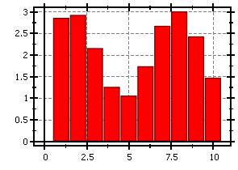
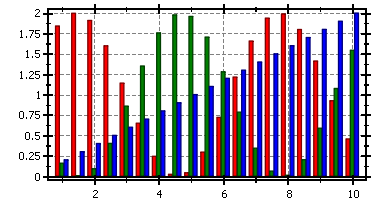
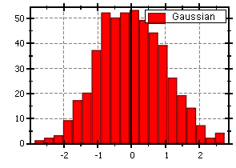
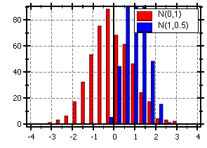

$$qf_commondoc_header.start$$ $$qf_commondoc_header.end$$
Bar Charts
$$funcref_start$$
bar(X,Y,"spec", "label") - creates a bar chart :
$$funcref_description$$
Example:
$$codeexample:bar(x=1:10,2+sin(x))$$

several bar plots are layed out, so the bars are besides each other
$$codeexample:bar(x=1:0.5:10,1+sin(x),"r",x,1-sin(x),"g",x,0.2*x,"b")$$

$$funcref_end$$
$$funcref_start$$
addbar(X,Y,"spec", "label") - adds a bar chart to the current figure:
$$funcref_description$$
Example:
$$codeexample:addbar(x=1:10,sin(x))$$
several bar plots are layed out, so the bars are besides each other
$$codeexample:bar(x=1:0.5:10,1+sin(x),"r");
addbar(x,1-sin(x),"g",x,0.2*x,"b")$$
$$funcref_end$$
Histograms
$$funcref_start$$
hist(X,[rangemin,rangemax],nbins,"spec", "label") - creates a histogram from the provided data :
$$funcref_description$$
X is a vector of data, over which the histogram is calculated.
[rangemin,rangemax] (optional) is the value range for the histogram.
nbins (optional) is the number of bins in the histogram.
spec (optional) defines the plot style.
label (optional) is the plot label.
Example:
$$codeexample:hist(randnormvec(500),20,"r","Gaussian")$$

$$codeexample:hist(randnormvec(500),[-4,4],20,"r","N(0,1)");
addhist(randnormvec(500,1,0.5),[-4,4],20,"b","N(1,0.5)");$$

$$funcref_end$$
$$funcref_start$$
addhist(X,[rangemin,rangemax],nbins,"spec", "label") - adds a histogram from the provided data:
$$funcref_description$$
X is a vector of data, over which the histogram is calculated.
[rangemin,rangemax] (optional) is the value range for the histogram.
nbins (optional) is the number of bins in the histogram.
spec (optional) defines the plot style.
label (optional) is the plot label.
Example:
$$codeexample:addhist(randnormvec(500),20,"r","Gaussian")$$
$$codeexample:hist(randnormvec(500),[-4,4],20,"r","N(0,1)");
addhist(randnormvec(500,1,0.5),[-4,4],20,"b","N(1,0.5)");$$
$$funcref_end$$